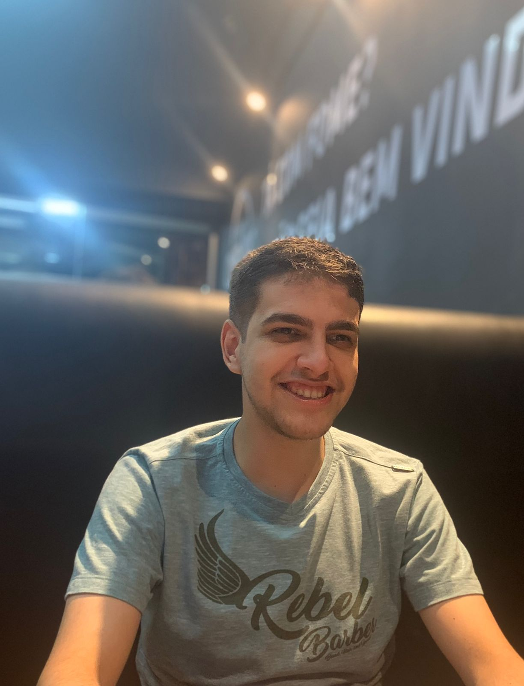

Arthur Trevizani Buback
Currículo

Informações:
Dados Pessoais
- Estado Civil: Solteiro
- Idade: 20 anos
Habitação:
- Cariacica - Espírito Santo - ES
Contatos:
- Telefone: XX XXXX XXXX
- Email: arthurbuback@gmail.com
Objetivo:
- Vaga para estágio na área de computação. Turno vespertino
Formação acadêmica
- Graduação em andamento em Ciências da Computação na Universidade de Vila Velha (UVV), 1° período com estimativa para concluir em 2025 (Turno Matutino);
- Ensino Médio completo no Centro de Ensino Charles Darwin.
Certificados
- Certificado Test of English as a Foreign Language (TOELF) adquirido pelo Centro de Cultura Anglo Americana (CCAA)
Idiomas
- Inglês - Avançado
- Espanhol - Básico
Computação
- SQL - Intermediário
- HTML - Iniciante
- Css - Iniciante
- Javascript - Iniciante